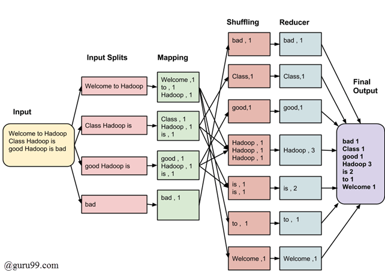

Fases MapReduce
MapReduce es un modelo de programación utilizado en Hadoop para procesar y analizar grandes conjuntos de datos distribuidos en un clúster de computadoras. Las fases de MapReduce se dividen principalmente en dos pasos: Map y Reduce.
La fase map estudia el problema, lo divide en trozos y los manda a diferentes máquinas para que todos los trozos puedan ejecutarse concurrentemente.
Los resultados de este proceso paralelo se recogen y se distribuyen a través de un distintos servidores que ejecutan una función “reduce”, que toma los resultados de los trozos y los recombina para obtener una respuesta simple
Fase: Map
Es la primera etapa del proceso y se encarga de transformar los datos de entrada en pares clave-valor.
- División de Datos: La entrada se divide en fragmentos más pequeños llamados "splits". Cada split se asigna a un mapper.
-
Operación de Mapeo: El mapper aplica una función de mapeo a cada elemento del split, generando pares clave-valor. La clave identifica el dato y el valor es el resultado de la operación de mapeo.
-
Los programas Map Reduce se dividenen Mappers, tareas que se ejecutan en los nodos
- Cada tarea MAP ataca a un solo bloque de datos HDFS
- Se ejecuta en el nodo donde reside el bloque (salvo excepciones)
Fase: Shuffle y Sort
Después de la fase Map, los resultados intermedios se agrupan según sus claves. Los datos con la misma clave se agrupan juntos y se envían a la fase Reduce. Además, se realiza un proceso de ordenamiento para facilitar el trabajo de la fase Reduce.
- Ordena y consolida los datos intermedios (temporales) que generan los mappers
- Se lanzan después de que todos los mappers hayan terminado y antes de que se lancen los procesos
Reduce
Fase: Reduce
- Reduce: En esta fase, los datos agrupados se pasan a una función de reducción (función Reduce). Esta función procesa los datos y realiza las operaciones finales. La salida de esta fase es el resultado final del procesamiento.
- Output: El resultado final después de la fase Reduce se almacena en el sistema de archivos Hadoop o se utiliza para futuros análisis, según los requisitos del usuario.


Ejemplo con más detalle
En la fase Map, se divide y transforma la entrada en pares clave-valor, mientras que en la fase Reduce, se procesan y combinan estos pares para producir el resultado final. La fase Shuffle y Sort es crucial para organizar los datos intermedios y asegurar que los datos con la misma clave se envíen al mismo proceso Reduce. Estas fases son esenciales para manejar eficientemente grandes conjuntos de datos distribuidos en un entorno de clúster.

https://www.guru99.com/introduction-to-mapreduce.html
Paso a paso
Tenemos 3 documentos y vamos a contar las repeticiones de palabras:
- Documento 1: "Hadoop es un framework para procesamiento distribuido."
- Documento 2: "MapReduce es una parte integral de Hadoop."
- Documento 3: "El procesamiento distribuido permite manejar grandes conjuntos de datos."
Fase MAP
En esta fase, cada documento se divide en palabras y se asigna una clave a cada palabra con un valor de 1. Esto es lo que haría la función Map.
Documento 1:
(Hadoop, 1)
(es, 1)
(un, 1)
(framework, 1)
(para, 1)
(procesamiento, 1)
(distribuido, 1)
Documento 3:
(El, 1)
(procesamiento, 1)
(distribuido, 1)
(permite, 1)
(manejar, 1)
(grandes, 1)
(conjuntos, 1)
(de, 1)
(datos, 1)
Fase Shuffle - Sort
Los pares clave-valor se agrupan según la clave y se ordenan para facilitar la fase Reduce.
(conjuntos, [1])
(datos, [1, 1])
(de, [1, 1, 1])
(distribuido, [1, 1])
(El, [1])
(es, [1, 1])
(framework, [1])
(grandes, [1])
(Hadoop, [1, 1])
(integral, [1])
(manejar, [1])
(MapReduce, [1])
(para, [1])
(parte, [1])
(permite, [1])
(procesamiento, [1, 1])
(un, [1])
(una, [1])
Fase Reduce
Se suman los valores para cada clave, produciendo el resultado final.
(conjuntos, 1)
(datos, 3)
(de, 3)
(distribuido, 2)
(El, 1)
(es, 2)
(framework, 1)
(grandes, 1)
(Hadoop, 2)
(integral, 1)
(manejar, 1)
(MapReduce, 1)
(para, 1)
(parte, 1)
(permite, 1)
(procesamiento, 2)
(un, 1)
(una, 1)
Ejemplos
Ejemplo 1: Contador de palabras
Supongamos que tienes un conjunto de datos de palabras en varios documentos y quieres contar cuántas veces aparece cada palabra. El proceso de mapeo podría ser algo así:
Entrada (fragmento de datos):
Operación de Mapeo: Para cada palabra en el fragmento, el mapper emite pares clave-valor. Por ejemplo:
(Hadoop, 1)
(es, 1)
(un, 1)
(framework, 1)
(Hadoop, 1)
(procesa, 1)
(grandes, 1)
(conjuntos, 1)
(de, 1)
(datos, 1)
Salida (conjunto intermedio): Las claves se agrupan, y los valores asociados a cada clave se colocan en una lista.
(Hadoop, [1, 1])
(es, [1])
(un, [1])
(framework, [1])
(procesa, [1])
(grandes, [1])
(conjuntos, [1])
(de, [1])
(datos, [1])
La fase Map genera este conjunto intermedio de pares clave-valor, que luego se utiliza en la fase Shuffle y Sort antes de pasar a la fase Reduce. Este proceso de mapeo se realiza de forma paralela en múltiples nodos del clúster, lo que permite un procesamiento eficiente de grandes conjuntos de datos.
Ejemplo 2: Análisis de Registros de Acceso a un Servidor Web
Supongamos que tienes registros de acceso a un servidor web en el siguiente formato:
Registro 1: /pagina1
Registro 2: /pagina2
Registro 3: /pagina1
Registro 4: /pagina3
Registro 5: /pagina2
Registro 6: /pagina1
Operación de Mapeo:
El objetivo es contar cuántas veces se ha visitado cada página. Cada registro de acceso se procesaría individualmente en un mapper, y la operación de mapeo generaría pares clave-valor. En este caso, la URL de la página sería la clave, y el valor sería 1 para indicar una visita.
Salida intermedia, sort, shuffle
Fase Reduce (Operación de Reducción):
En la fase Reduce, se sumarían los valores asociados a cada clave para obtener el recuento total de visitas por página.
Ejemplo 3: Ejemplo: Cálculo del Saldo Total por Cuenta
Supongamos que tienes registros de transacciones financieras con el siguiente formato:
Transacción 1: Cuenta_A, 100.00
Transacción 2: Cuenta_B, 50.00
Transacción 3: Cuenta_A, -20.00
Transacción 4: Cuenta_B, 30.00
Transacción 5: Cuenta_A, 50.00
Operación de Mapeo:
El objetivo es calcular el saldo total por cuenta. Cada registro de transacción se procesaría individualmente en un mapper. La operación de mapeo generaría pares clave-valor, donde la clave es el nombre de la cuenta y el valor es el monto de la transacción (puede ser negativo para las transacciones de débito).
Salida Intermedia (Después de la fase Shuffle y Sort):
Fase Reduce (Operación de Reducción):
En la fase Reduce, se sumarían los valores asociados a cada clave para obtener el saldo total por cuenta.
Ejemplo 4: Encontrar la Temperatura Máxima por Ubicación
Supongamos que tienes registros de temperatura con el siguiente formato:
Registro 1: Ubicacion_A, 25.5°C
Registro 2: Ubicacion_B, 28.3°C
Registro 3: Ubicacion_A, 27.8°C
Registro 4: Ubicacion_B, 30.2°C
Registro 5: Ubicacion_A, 26.0°C
Operación de Mapeo:
El objetivo es encontrar la temperatura máxima para cada ubicación. Cada registro de temperatura se procesaría individualmente en un mapper. La operación de mapeo generaría pares clave-valor, donde la clave es la ubicación y el valor es la temperatura.
(Ubicacion_A, 25.5°C)
(Ubicacion_B, 28.3°C)
(Ubicacion_A, 27.8°C)
(Ubicacion_B, 30.2°C)
(Ubicacion_A, 26.0°C)
Salida Intermedia (Después de la fase Shuffle y Sort):
Fase Reduce (Operación de Reducción):
En la fase Reduce, se encontraría la temperatura máxima para cada ubicación.
Ejemplo 5: Cálculo del Tiempo Total por Usuario en una Plataforma en Línea
Datos de Entrada:
Registro 1: Usuario_A, Inicio_Sesión, 2023-01-01 08:00:00
Registro 2: Usuario_A, Acción, 2023-01-01 08:15:00
Registro 3: Usuario_B, Inicio_Sesión, 2023-01-01 09:30:00
Registro 4: Usuario_A, Fin_Sesión, 2023-01-01 09:35:00
Registro 5: Usuario_B, Acción, 2023-01-01 10:00:00
Operación de Mapeo:
El objetivo es calcular el tiempo total que cada usuario ha pasado en la plataforma. Cada registro de actividad se procesaría individualmente en un mapper. La operación de mapeo generaría pares clave-valor, donde la clave es el nombre del usuario y el valor es la duración de la actividad (por ejemplo, tiempo entre el inicio de sesión y la acción o entre la acción y el cierre de sesión).
Salida Intermedia (Después de la fase Shuffle y Sort):
Fase Reduce (Operación de Reducción):
En la fase Reduce, se sumarían los tiempos asociados a cada usuario para obtener el tiempo total que cada usuario ha pasado en la plataforma.
Ejemplo 6: Identificación de Usuarios Influyentes en una Red Social
Datos de Entrada:
Evento 1: Usuario_A publicó un mensaje.
Evento 2: Usuario_B comentó en el mensaje de Usuario_A.
Evento 3: Usuario_C dio "Me gusta" al mensaje de Usuario_A.
Evento 4: Usuario_A compartió el mensaje de Usuario_B.
Evento 5: Usuario_C comentó en el mensaje compartido por Usuario_A.
Evento 6: Usuario_B dio "Me gusta" al comentario de Usuario_C.
Operación de Mapeo:
El objetivo es identificar patrones de interacción entre usuarios. Cada evento se procesaría individualmente en un mapper. La operación de mapeo generaría pares clave-valor, donde la clave es el nombre del usuario y el valor es la acción realizada.
Salida mapeo
(Usuario_A, [publicó, compartió])
(Usuario_B, [comentó, dio_me_gusta])
(Usuario_C, [dio_me_gusta, comentó])
(Usuario_A, [compartió])
(Usuario_C, [comentó, dio_me_gusta])
(Usuario_B, [dio_me_gusta])
Salida Intermedia (Después de la fase Shuffle y Sort):
(Usuario_A, [publicó, compartió, compartió])
(Usuario_B, [comentó, dio_me_gusta, dio_me_gusta])
(Usuario_C, [dio_me_gusta, comentó, comentó])
Fase Reduce (Operación de Reducción):
En la fase Reduce, se analizarían los patrones de interacción para determinar la influencia de cada usuario. Por ejemplo, podrías asignar puntajes a los usuarios según el número de publicaciones, comentarios y "Me gusta" recibidos, y luego sumar esos puntajes para cada usuario.
Ejemplo 7: Detección de Anomalías en Datos de Sensores Industriales
Datos de Entrada:
Evento 1: Sensor_A, Temperatura, 30°C
Evento 2: Sensor_B, Presión, 100 psi
Evento 3: Sensor_A, Temperatura, 32°C
Evento 4: Sensor_B, Presión, 105 psi
Evento 5: Sensor_A, Temperatura, 28°C
Evento 6: Sensor_B, Presión, 110 psi
Operación de Mapeo:
El objetivo es identificar patrones de comportamiento anómalo en los datos del sensor. Cada evento se procesaría individualmente en un mapper. La operación de mapeo generaría pares clave-valor, donde la clave es el tipo de sensor y el valor es el valor del evento.
Salida mapeo:
Salida Intermedia (Después de la fase Shuffle y Sort):
Fase Reduce (Operación de Reducción):
En la fase Reduce, se analizarían los patrones de comportamiento para identificar anomalías. Por ejemplo, podrías calcular estadísticas como el promedio y la desviación estándar para cada tipo de sensor y luego identificar eventos que se desvíen significativamente de estas estadísticas como posibles anomalías.